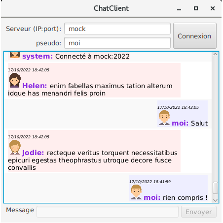

Aperçu graphique de l'application
L'application ChatRT présente une interface moderne et fonctionnelle :


Architecture technique - Communication client-serveur
// Établissement de la connexionSocket socket = new Socket("localhost", 8080);
ObjectOutputStream out = new ObjectOutputStream(socket.getOutputStream());
ObjectInputStream in = new ObjectInputStream(socket.getInputStream());
// Envoi de message JSON
Message message = new Message(user, content, timestamp);
out.writeObject(JsonParser.toJson(message));